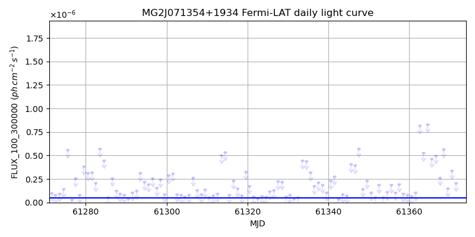
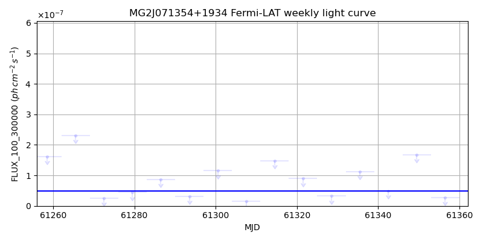
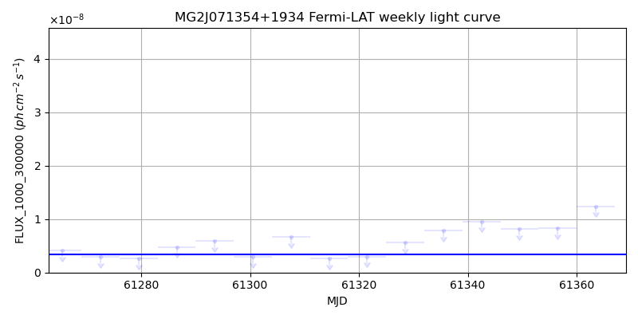

LAT Lightcurve site: https://fermi.gsfc.nasa.gov/ssc/data/access/lat/msl_lc/source/MG2_J071354p1934
NED: Query
Time of last update of this page: UT: 2026-11-28 16:18 (MJD: 61372.679)
| Property | Value |
|---|---|
| R.A. | 7:13:55.68 |
| Dec. | 19:34:58.8 |
| z | 0.540 |
| 3FGL SpectrumType | LogParabola |
| 3FGL PL Index | |
| 3FGL Flux_100_300000 | 4.96e-08 1 / (s cm2) |
| 3FGL Flux_1000_300000 | 3.41e-09 1 / (s cm2) |
| 3FGL Flux >200 GeV | 8.62e-13 1 / (s cm2) |
| 3FGL Extrap. Crab >200 GeV | 0.00 |
| 3FGL Flux After EBL Absorption >200GeV | 1.34e-13 1 / (s cm2) |
| 3FGL EBL Crab Fraction >200GeV | 0.00 |

| MJD | dMJD | Flux | dFlux | Frac3FGL | FracCrab>200GeV | EBLFracCrab>200GeV |
|---|---|---|---|---|---|---|
| 61367.50 | 0.50 | 2.64e-07 | 0.00e+00 | 0.00 | 0.00 | 0.00 |
| 61368.50 | 0.50 | 5.65e-07 | 0.00e+00 | 0.00 | 0.00 | 0.00 |
| 61369.50 | 0.50 | 1.50e-07 | 0.00e+00 | 0.00 | 0.00 | 0.00 |
| 61370.50 | 0.50 | 3.39e-07 | 0.00e+00 | 0.00 | 0.00 | 0.00 |
| 61371.50 | 0.50 | 2.07e-07 | 0.00e+00 | 0.00 | 0.00 | 0.00 |

| MJD | dMJD | Flux | dFlux | Frac3FGL | FracCrab>200GeV | EBLFracCrab>200GeV |
|---|---|---|---|---|---|---|
| 61335.50 | 3.50 | 1.13e-07 | 0.00e+00 | 0.00 | 0.00 | 0.00 |
| 61342.50 | 3.50 | 4.92e-08 | 0.00e+00 | 0.00 | 0.00 | 0.00 |
| 61349.50 | 3.50 | 1.68e-07 | 0.00e+00 | 0.00 | 0.00 | 0.00 |
| 61356.50 | 3.50 | 2.79e-08 | 0.00e+00 | 0.00 | 0.00 | 0.00 |
| 61363.50 | 3.50 | 6.89e-08 | 0.00e+00 | 0.00 | 0.00 | 0.00 |
| MJD | dMJD | Flux | dFlux | Frac3FGL | FracCrab>200GeV | EBLFracCrab>200GeV |
|---|---|---|---|---|---|---|
| 61367.50 | 0.50 | 4.68e-08 | 0.00e+00 | 0.00 | 0.00 | 0.00 |
| 61368.50 | 0.50 | 2.42e-08 | 0.00e+00 | 0.00 | 0.00 | 0.00 |
| 61369.50 | 0.50 | 6.87e-08 | 0.00e+00 | 0.00 | 0.00 | 0.00 |
| 61370.50 | 0.50 | 3.96e-08 | 0.00e+00 | 0.00 | 0.00 | 0.00 |
| 61371.50 | 0.50 | 4.73e-08 | 0.00e+00 | 0.00 | 0.00 | 0.00 |

| MJD | dMJD | Flux | dFlux | Frac3FGL | FracCrab>200GeV | EBLFracCrab>200GeV |
|---|---|---|---|---|---|---|
| 61335.50 | 3.50 | 7.86e-09 | 0.00e+00 | 0.00 | 0.00 | 0.00 |
| 61342.50 | 3.50 | 9.56e-09 | 0.00e+00 | 0.00 | 0.00 | 0.00 |
| 61349.50 | 3.50 | 8.15e-09 | 0.00e+00 | 0.00 | 0.00 | 0.00 |
| 61356.50 | 3.50 | 8.30e-09 | 0.00e+00 | 0.00 | 0.00 | 0.00 |
| 61363.50 | 3.50 | 1.24e-08 | 0.00e+00 | 0.00 | 0.00 | 0.00 |
--------------------------------------------------------- Using user-supplied coords: 7:13:55.68 19:34:58.8 2000 --------------------------------------------------------- FLWO UT night of: 2026-11-29 Local Sid. @ Midnight: 04:08 Sunset (-15.0) (local, UT): 18:31 01:31 Sunrise (-15.0) (local, UT): 05:53 12:53 Moonrise (local, UT): 21:57 04:57 Moonset (local, UT): Moon phase: 0.72 --------------------------------------------------------- AzTime LSID UT Obj_el Obj_az Mn_el Mn_az Sep. --------------------------------------------------------- 18:31 22:39 01:31 -19.3 50.8 -32.9 32.1 21.6 19:01 23:09 02:01 -14.1 55.9 -29.4 38.9 22.0 19:31 23:39 02:31 -8.7 60.6 -25.4 45.0 22.4 20:01 00:09 03:01 -1.8 64.8 -21.0 50.6 22.7 20:31 00:39 03:31 3.1 68.8 -16.2 55.6 23.1 21:01 01:09 04:01 9.0 72.5 -11.1 60.2 23.4 21:31 01:39 04:31 15.1 76.1 -5.4 64.5 23.7 22:01 02:09 05:01 21.4 79.6 0.4 68.5 24.1 22:31 02:39 05:31 27.7 83.1 5.8 72.2 24.4 23:01 03:10 06:01 34.1 86.7 11.6 75.8 24.6 23:31 03:40 06:31 40.5 90.6 17.5 79.4 24.9 00:01 04:10 07:01 46.9 94.8 23.6 82.9 25.2 00:31 04:40 07:31 53.2 99.7 29.7 86.5 25.4 01:01 05:10 08:01 59.4 105.8 35.8 90.3 25.7 01:31 05:40 08:31 65.5 113.9 42.0 94.4 25.9 02:01 06:10 09:01 71.0 125.8 48.1 99.1 26.1 02:31 06:40 09:31 75.6 145.0 54.2 104.7 26.3 03:01 07:10 10:01 77.8 174.6 60.1 111.7 26.5 03:31 07:40 10:31 76.6 206.6 65.6 121.1 26.7 04:01 08:10 11:01 72.6 229.0 70.5 134.7 26.9 04:31 08:40 11:31 67.3 242.8 74.0 154.7 27.1 05:01 09:11 12:01 61.4 251.9 75.2 181.1 27.2 05:31 09:41 12:31 55.2 258.5 73.6 206.8 27.4 05:53 10:02 12:53 50.7 262.4 71.0 221.2 27.6 --------------------------------------------------------- Dark hours >55 deg.: 0.00